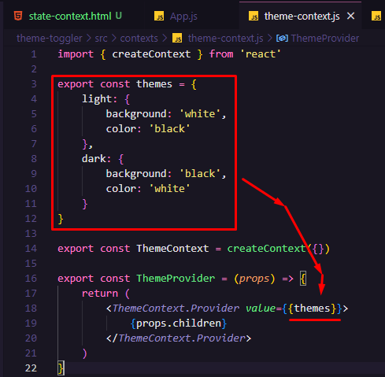
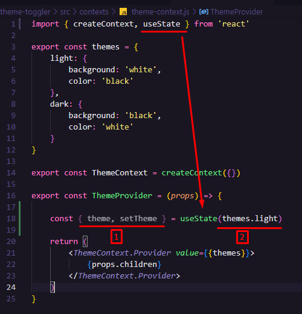
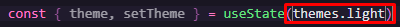
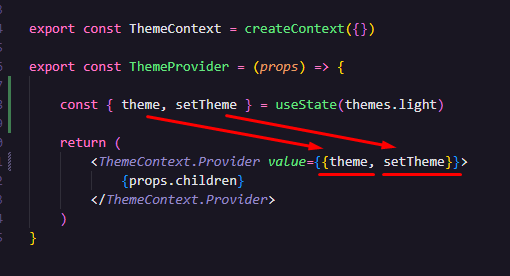
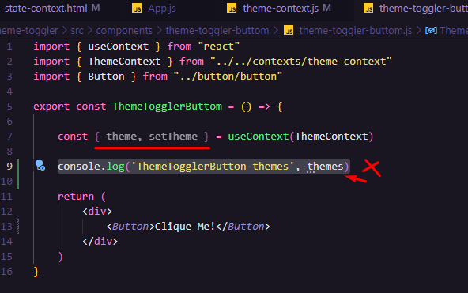
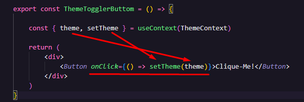
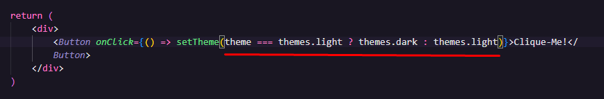
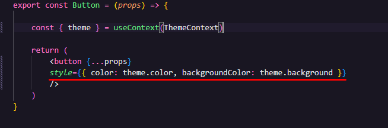

Criando um Hook de Estado pra alternar o estado dos elementos (nesse caso o estilo deles)
OBS: "Quero uma forma de que quando eu clicar noo botão ele alterne o tema. Não vou adicionar o OnClick dentro do componente de Button pra que ele fique o mais genérico possível, vou passar essa responsabilidade pro ThemeTogglerButton porquê ele que é o Botão-Alternador-de-Tema."
REFATORAÇÃO: Dentro do nosso theme-context.js podemos perceber que estamos passando o Objeto de Temas pro ThemesProvider, isso não é muito útil.

- Mandando apenas o estado de tema atual da aplicação no lugar do Objeto de Temas completo:

ATENÇÃO: Há um erro na linha 18. theme e setTheme são escritos ENTRE COLCHETES, não entre chaves!
Explicando o Código: "Do objeto Themes, vamos pegar apenas o Light: . Depois, fazemos uma desestruturação e colocamos apenas esse Light dentro de uma nova variável chamada Theme (no singular) junto de uma outra variável chamada SetTheme."
- Passando o Theme e o SetTheme pra dentro dos Componentes Filhos:

- Passando o Theme e o SetTheme que está vindo do Provedor e excluindo a linha do console.log:

- Criando um Evento de clique e declarando uma função. Essa função (no caso será o setTheme que recebe Theme por parâmetro) só é ativada quando o evento de clique disparar:

OBS: lembrando, o 'theme' é o tema atual, então, quando o evento for disparado, vai mudar pro próximo tema.
- Criando a lógica do botão:

"Se o que tiver vindo do 'Theme' for idêntico ao Light, alterne pro Dark. Se não, altere pro Light."
- Informando pros componentes que quando o evento de clique for ativado vai mudar o tema dos componentes:
